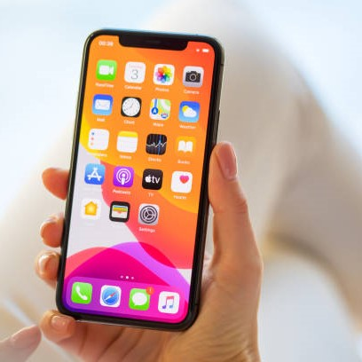

Apple ще се откаже от Lightning конектора на своите iPhone, потвърди компанията, след като европейските регулатори решиха, че всички смартфони трябва да имат USB зареждане като стандарт след две години. Новите правила на ЕС изискват всички телефони, продадени след есента на 2024 г., да използват USB-C конектор за своите портове за зареждане.